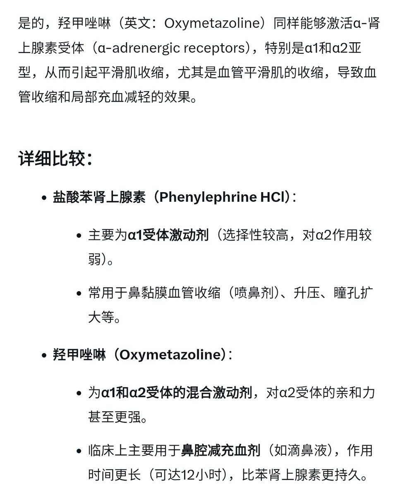

時璃風医詩🍥🌈
@hagishigure
@sky_string 你應該上網去看一下苯乙胺衍生物的共同點，都是TAAR1的強效激動劑，TAAR1是一種G蛋白偶聯受體，存在於大腦和外周組織中，可調節神經遞質信號傳導、免疫功能、腸腦軸和獎賞迴路
簡單的說，體感的所有部分都与這個受體緊密連接。

bambi_obey
@sky_string
羟甲唑啉同样是α-肾上腺素受体激动剂，理论上来说会和苯肾上腺素发挥同样的作用，平台上一般都是0.05%的添加量用来治疗鼻塞，一般十几块钱一瓶。
我买了，好像有作用！
虽然添加量很少，但是好像确实有作用！
不晓得是不是安慰剂，还有谁愿意试试吗？ https://t.co/SdZdLZPw82 https://t.co/qvCtHm3hbh